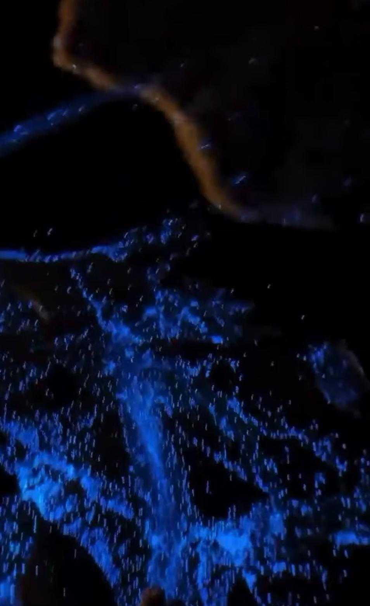

طبيعة الشاطئ نهارًا
يتميز شاطئ البستان برماله الذهبية الناعمة ومياهه الهادئة، مما يجعله مناسبًا للسباحة والجلوس على الشاطئ والاستمتاع بمنظر الجبال المحيطة. كما تنتشر حوله الأشجار والمسطحات الخضراء التي تضيف جوًا من الراحة والاسترخاء.
يمكن للزوار ممارسة السباحة، والمشي على امتداد الشاطئ، والتقاط الصور التذكارية، أو الاستمتاع برحلات بحرية قصيرة بالقرب من الشاطئ.
اللمعان الأزرق ليلًا (التلألؤ الحيوي)
في بعض الليالي الهادئة يمكن ملاحظة نقاط زرقاء متلألئة على سطح الماء وعلى حافة الأمواج، وهي ظاهرة طبيعية تُسمى التلألؤ الحيوي، تنتج عن كائنات بحرية دقيقة تصدر ضوءًا أزرق عند تحرك الموج أو لمس الماء. هذه الظاهرة تجعل الشاطئ يبدو كأنه مغطى بالنجوم على سطح البحر.
تساعد هذه الظاهرة على زيادة جمال الشاطئ وتشجع الزوار على تصوير مقاطع مرئية مميزة، ولكن يجب احترام الطبيعة وعدم رمي المخلفات في البحر للحفاظ على الكائنات البحرية.

استمع إلى تقرير عن شاطئ البستان
في هذا المقطع الصوتي نقدّم تقريرًا مختصرًا عن مميزات الشاطئ وأهم الأنشطة التي يمكن القيام بها:
بعد الاستماع يمكنك الانتقال إلى صفحة فريق العمل والتواصل للتعرّف على الطالبات وما تعلمنه من هذا المشروع.